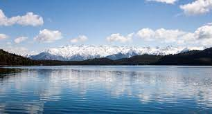
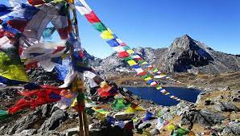
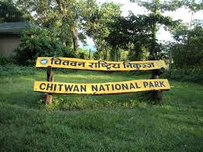

Domestic Travel
Nepal is a beautiful country with various breath-taking scenarios and natural destinations. We at Tour
and travels provide you with opportunity to travel various places in luxurious manner.Nepal is a beautiful country with various breath-taking scenarios and natural destinations. We at Tour
and travels provide you with opportunity to travel various places in luxurious manner.
Rara Lake

Rara Lake is the biggest fresh water lake in the Nepalese Himalayas. It is the main feature of Rara National Park, located in Jumla and Mugu Districts of Karnali Province.Rara Lake lies at an elevation of 2,990 m (9,810 ft), has a water surface of 10.8 km2 (4.2 sq mi), a maximum depth of 167 m (548 ft), is 5.1 km (3.2 mi) long and 2.7 km (1.7 mi) wide. It drains into the Mugu Karnali River via the Nijar River.Rara Lake is the biggest fresh water lake in the Nepalese Himalayas. It is the main feature of Rara National Park, located in Jumla and Mugu Districts of Karnali Province.Rara Lake lies at an elevation of 2,990 m (9,810 ft), has a water surface of 10.8 km2 (4.2 sq mi), a maximum depth of 167 m (548 ft), is 5.1 km (3.2 mi) long and 2.7 km (1.7 mi) wide. It drains into the Mugu Karnali River via the Nijar River.Rara Lake is the biggest fresh water lake in the Nepalese Himalayas. It is the main feature of Rara National Park, located in Jumla and Mugu Districts of Karnali Province.Rara Lake lies at an elevation of 2,990 m (9,810 ft), has a water surface of 10.8 km2 (4.2 sq mi), a maximum depth of 167 m (548 ft), is 5.1 km (3.2 mi) long and 2.7 km (1.7 mi) wide. It drains into the Mugu Karnali River via the Nijar River.
Things to do
- Sight seeing
- Beautiful lodges
Gosaikunda

Gosaikunda, also spelled Gosainkunda and Gosain Kunda, is an alpine freshwater oligotrophic lake in Nepal's Langtang National Park, located at an elevation of 4,380 m (14,370 ft) in the Rasuwa District with a surface of 13.8 ha (34 acres).The Gosaikunda area has been delineated as a religious site. Hindu mythology attributes Gosaikunda as the abode of the Hindu deities Shiva and Gauri. The Hindu scriptures Bhagavata Purana, Vishnu Purana and the epics Ramayana and Mahabharata refer to Samudra manthan, which is directly related to the origin of Gosaikunda.Gosaikunda, also spelled Gosainkunda and Gosain Kunda, is an alpine freshwater oligotrophic lake in Nepal's Langtang National Park, located at an elevation of 4,380 m (14,370 ft) in the Rasuwa District with a surface of 13.8 ha (34 acres).The Gosaikunda area has been delineated as a religious site. Hindu mythology attributes Gosaikunda as the abode of the Hindu deities Shiva and Gauri. The Hindu scriptures Bhagavata Purana, Vishnu Purana and the epics Ramayana and Mahabharata refer to Samudra manthan, which is directly related to the origin of Gosaikunda.Gosaikunda, also spelled Gosainkunda and Gosain Kunda, is an alpine freshwater oligotrophic lake in Nepal's Langtang National Park, located at an elevation of 4,380 m (14,370 ft) in the Rasuwa District with a surface of 13.8 ha (34 acres).The Gosaikunda area has been delineated as a religious site. Hindu mythology attributes Gosaikunda as the abode of the Hindu deities Shiva and Gauri. The Hindu scriptures Bhagavata Purana, Vishnu Purana and the epics Ramayana and Mahabharata refer to Samudra manthan, which is directly related to the origin of Gosaikunda.
Things to do
- Sight seeing
- Beautiful lodges
Chitwan National Park

Chitwan is one of the few remaining undisturbed vestiges of the 'Terai' region, which formerly extended over the foothills of India and Nepal. It has a particularly rich flora and fauna. One of the last populations of single-horned Asiatic rhinoceros lives in the park, which is also one of the last refuges of the Bengal tiger.Chitwan is one of the few remaining undisturbed vestiges of the 'Terai' region, which formerly extended over the foothills of India and Nepal. It has a particularly rich flora and fauna. One of the last populations of single-horned Asiatic rhinoceros lives in the park, which is also one of the last refuges of the Bengal tiger.Chitwan is one of the few remaining undisturbed vestiges of the 'Terai' region, which formerly extended over the foothills of India and Nepal. It has a particularly rich flora and fauna. One of the last populations of single-horned Asiatic rhinoceros lives in the park, which is also one of the last refuges of the Bengal tiger.Chitwan is one of the few remaining undisturbed vestiges of the 'Terai' region, which formerly extended over the foothills of India and Nepal. It has a particularly rich flora and fauna. One of the last populations of single-horned Asiatic rhinoceros lives in the park, which is also one of the last refuges of the Bengal tiger.
Things to do
- Sight seeing
- Beautiful lodges
International Travel
Thailand

Thailand is a Southeast Asian country. It's known for tropical beaches, opulent royal palaces, ancient ruins and ornate temples displaying figures of Buddha. In Bangkok, the capital, an ultramodern cityscape rises next to quiet canalside communities and the iconic temples of Wat Arun, Wat Pho and the Emerald Buddha Temple (Wat Phra Kaew). Nearby beach resorts include bustling Pattaya and fashionable Hua Hin.